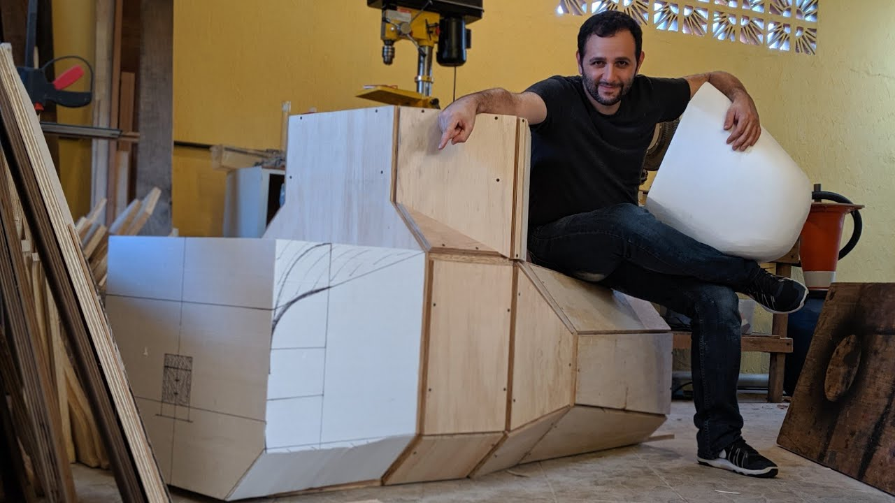

Iberê Thenório

Iberê e o seu submarino em construção
Formado em Jornalismo e criador do canal Manual Do Mundo, Iberê faz muito sucesso com os seus vídeos cheios de experiências científicas, projetos e explicações. Atualmente com 14,3 mi de inscritos impressiona com a sua sede por conhecimento e dedicação. Sua esposa Mari participa na criação de conteúdo do canal, também com teorias e experiências.